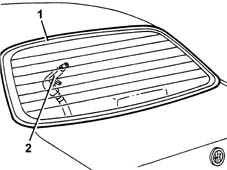

7035A Check there is no penetration through the fixed windows (windscreen and rearscreen)
- Path
- Test > 70 FITTINGS > 7035 BODYSHELL WINDOWS > 7035A Check there is no penetration through the fixed windows (windscreen and rearscreen)
- Kind
- test / check procedure
- Applies to
- engines: 1.6 TS , 1.8 TS, 2.5 V6, 1.9 JTD 8v , 2.4 JTD 10v; all production periods
- Interactive page
- https://sloeber94.github.io/elrnDB-a156/en/#/3239191
Applies to: engines: 1.6 TS , 1.8 TS, 2.5 V6, 1.9 JTD 8v , 2.4 JTD 10v; all production periods
Apply a solution of soapy water to the entire perimeter of the window exterior.
From inside the passenger compartment, blow through with an air jet along the entire perimeter.
If necessary, move the covers sideways and upwards.

Visually inspect for the formation of air bubbles on the outside surface: this makes it possible to identify any points where the sealant is insufficient or damaged.
If there is insufficient sealant on the vertical pillars, the pillar cover can be moved and a rubber type sealant injected inside.
If there is insufficient sealant on the top section, then the roof lining can be moved and rubber type sealant injected from the inside.
If there is insufficient sealant on the botton section, then the windscreen base cover (for the front windscreen) and the rear parcel shelf (for the rearscreen) can be moved aside and rubber type sealant injected from the inside.
If there is insufficient sealant in a generalized more widespread area, then the seal of the window is not guaranteed and the glass must be removed and new sealant completely reapplied (see Op. 7035A14 (Bonded type) windscreen GLASS - R.R. - Includes. cleaning edges of glass and housing in bodyshell (windscreen) and 7035B10 Rearscreen (bonded type) WINDOW GLASS - R.R. - Includes. cleaning edges of glass and housing in bodyshell (rearscreen)).